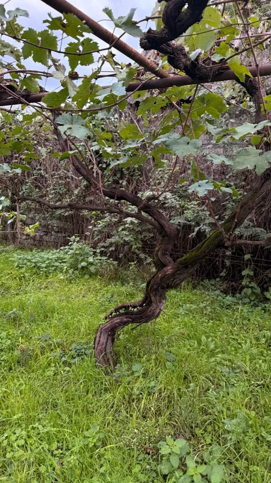
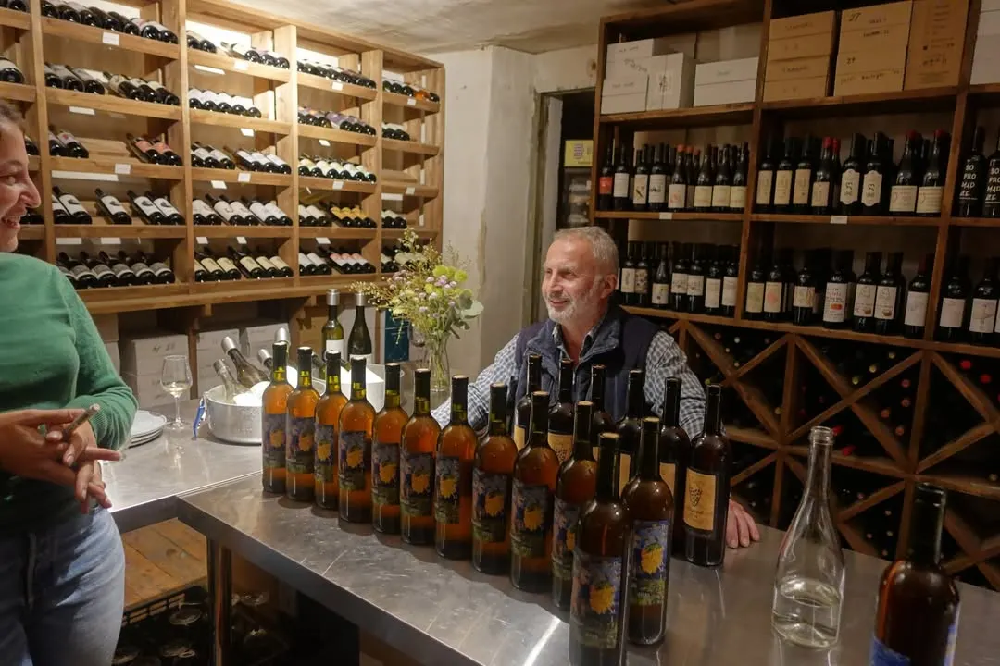
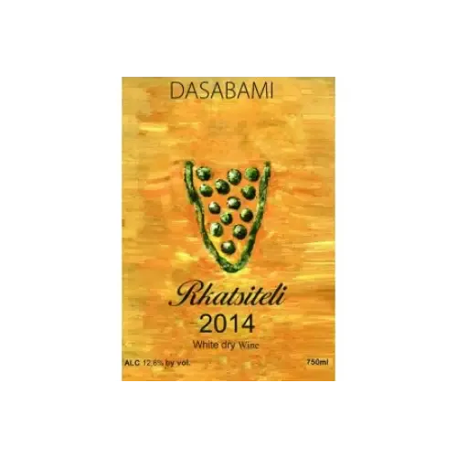
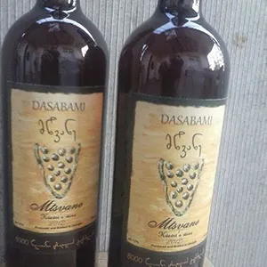

0ha
ブドウ畑タマリシで家族がオーガニック栽培
クヴェモ・カルトリの丘で、ある家族が樹齢70年のブドウ畑をわずか1ヘクタール、オーガニックで育てています。 ルカツィテリ、ムツヴァネ、ヒフヴィ そして タフクヴェリ は、ザザの父がそうしたように、果皮とともに、粘土の甕の中で、大地の下でワインになっていきます。
ブドウ畑タマリシで家族がオーガニック栽培

古樹家族のブドウ畑の樹齢

年間生産本数最大でこの数。各ワインは数百本ずつです。

年もののクヴェヴリ100年を超える、家族の粘土の甕

初めての瓶詰め3世代にわたるワイン造りを経て

ダサバミは、トビリシの南にあるタマリシ村でザザの父が創業しました。ザザは父から家族のマラニ（ワイン蔵）を受け継ぎ、今では家族みんなでワインを造っています。
本業は軍人。ザザは2012年に初めて家族のワインを瓶詰めしました。ダサバミはジョージアの Natural Wine Association（ナチュラルワイン協会）の会員です。



オーガニックのブドウ、野生酵母、清澄なし、濾過なし。白ブドウはクヴェヴリの中で果皮とともに醸され、アンバーワイン（オレンジワイン）になります。タフクヴェリは赤。
すべてのワイン：野生酵母、クヴェヴリで発酵・熟成、清澄なし、濾過なし、SO₂無添加、沖積土壌、750ml。
出典： Roni Selects のテクニカルシート（米国の輸入元）。バーは12か月・900本を基準に比較しています。
クヴェヴリによるワイン造りは、ジョージアが約8,000年にわたり自然なワインを造ってきた方法です。ダサバミでは、それが今も変わりません。


フラミ川の東、タマリシの1ヘクタール。樹齢約70年の畑にはルカツィテリ、ムツヴァネ、タフクヴェリが植わり、ヒフヴィは2009年頃に加わりました。
季節ごとに手をかける家族の畑。冬には垣根仕立ての古樹を手で剪定し、次のヴィンテージに備えます。
ブドウは地中に埋めた粘土のクヴェヴリの中で、自らの野生酵母によって発酵します。そのひとつは100年以上前のもの。白ブドウは3〜12か月果皮とともに過ごし、琥珀色になります。
清澄なし、濾過なし、SO₂無添加。各ワインは数百本ずつ、年間合計で約3,000本です。
this Rkatsiteli she selected for us was divine.
ジョージアのナチュラルワイン運動を始めた生産者のひとりに数えられる。
家族の1ヘクタールの畑、年間約3,000本、そして100年を超えて使われる家族のクヴェヴリ。
書籍 Tasting Georgiaで紹介：ザザとともにトビリシからタマリシのセラーへ、シャヴナバダのクヴェヴリ・セラーを経由するドライブ。
ザザは父のマラニ（ワイン蔵）を受け継ぎ、伝統が続くよう幼い息子をブドウ畑に連れて行く。
2010年のルカツィテリはクヴェヴリで5年。シルキーで琥珀がかった黄金色、クラウドベリーとシーバックソーンの風味があり、チーズとの相性は抜群。
ハンブルクのナチュラルワインショップは、ヒフヴィ 2018 をエネルギッシュで生き生きとした、深みのあるワインに分類した。
私たちの Instagram と、タグ付けしてくれるバーやショップ、友人たちの投稿から。
ダサバミを扱った、または提供したお店です。最新の在庫はお問い合わせください。


2026年11月22日に、見つけられる限りのオンラインショップを確認しました。以下の掲載はすべて売り切れのため、ボトルを手に入れる一番確実な方法はザザに直接メールすることです。
 MORE Natural Wine
ベルリン · EU・英国へ発送
ヒフヴィ 2019
MORE Natural Wine
ベルリン · EU・英国へ発送
ヒフヴィ 2019
 Hop Burns & Black
ロンドン（英国）
ルカツィテリ 2016
Hop Burns & Black
ロンドン（英国）
ルカツィテリ 2016
 The Cellar d’Or
ニューヨーク州イサカ
ルカツィテリ 2022・2020
The Cellar d’Or
ニューヨーク州イサカ
ルカツィテリ 2022・2020

Grand Wine Cellar ニューヨーク州サイオセット ルカツィテリ · 12本ケース Flatiron Wines
サンフランシスコ
ダサバミ コレクション
Flatiron Wines
サンフランシスコ
ダサバミ コレクション
プロフィール、レビュー、輸入元
 Roni Selects
米国の輸入元
生産者ページとテクニカルシート
Roni Selects
米国の輸入元
生産者ページとテクニカルシート
 Raisin
ナチュラルワインアプリ
コミュニティのレビュー
Raisin
ナチュラルワインアプリ
コミュニティのレビュー
 Natural Wine Association
ジョージア
会員プロフィールと畑
Natural Wine Association
ジョージア
会員プロフィールと畑

Wines of Georgia ディレクトリ ワイナリー紹介 Vivino
222件の評価で3.8
ワイナリーページ
Vivino
222件の評価で3.8
ワイナリーページ

ダサバミは2026年11月28日、ジョージアのナチュラルワインの巡回フェア Amber Georgia に出展し、ワインを注ぎます。
ダサバミ（დასაბამი、「はじまり」の意）は、ジョージアのクヴェモ・カルトリ地方、マルネウリ自治体のタマリシ村にある家族経営の自然派ワイナリーです。醸造家ザザ・ダルサヴェリゼの父が創業し、わずか1ヘクタールの畑から、自然派・オーガニックのクヴェヴリワインを年間最大約3,000本造っています。
ザザ・ダルサヴェリゼと家族みんなです。ザザは下カルトリ（クヴェモ・カルトリ）でワインを造ってきた家系の3代目で、2012年に初めて家族のワインを瓶詰めしました。
ジョージアのクヴェモ・カルトリ（下カルトリ）地方、マルネウリ自治体のタマリシ村にあります。トビリシの南、フラミ川の東側です。畑の広さは約1ヘクタール、樹齢は約70年です。
ジョージア固有の4品種です。アンバーワインになるルカツィテリ、ムツヴァネ、ヒフヴィと、赤のタフクヴェリ。古樹は樹齢約70年で、ヒフヴィは2009年頃に植えられました。
地中に埋めた粘土の甕、クヴェヴリで造ります。ブドウは野生酵母で発酵し、白ブドウは3〜12か月果皮とともに漬け込まれて琥珀色になります。清澄も濾過もせず、SO₂無添加で瓶詰めします。家族のクヴェヴリのひとつは100年以上前のものです。
はい。ダサバミはジョージアのナチュラルワインです。畑はオーガニックで栽培され、輸入元のテクニカルシートには亜硫酸無添加、野生酵母、清澄・濾過なしと記載されています。そしてダサバミはジョージアの Natural Wine Association（ナチュラルワイン協会）の会員です。
全体で年間最大約3,000本です。各ワインは少量生産で、180本（タフクヴェリ 2020）から900本（ルカツィテリ 2020）までです。
トビリシでは、27 Wine Cellar & Shop と Sulico Wine Bar (ザンドゥケリ通り27番地)、 Dadi Wine Bar (自由広場近く、ダディアニ通り4番地) で扱っています。アメリカでは輸入元の Roni Selects を通じて購入できます。これまでに MORE Natural Wine (ベルリン)、Hop Burns & Black (ロンドン)、The Cellar d’Or と Grand Wine Cellar (ニューヨーク) などのオンラインショップで販売されましたが、2026年11月22日時点ではすべて売り切れでした。最新の在庫については、 zazabery@gmail.com へメールするか、Instagram の @dasabami までメッセージをお送りください。
ダサバミ（დასაბამი）は、ジョージア語で「はじまり」「起源」を意味します。
ザザ・ダルサヴェリゼへのメールは zazabery@gmail.com まで。または、Instagram の @dasabami までメッセージをお送りください。